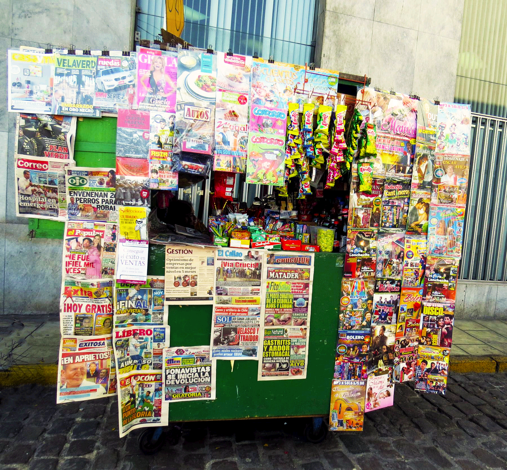

Yo estaba resuelto a no dejarlos hasta que papá me dijo que los soltara. No entendía por qué y para qué. Tras unos pocos segundos, que parecían una eternidad, no tenía noción de lo que realmente pasaba, solo sabía que mi papá me había comprado unos caramelos y yo estaba feliz.

Luego, al dejar atrás este suceso de cierto día de mi niñez, puedo reflexionar en el presente. Puede que para muchos les sea difícil recordar lo que vivimos cuando niños o algunos difícil olvidar, si estos han sido traumaticos o violentos. Pero, ese suceso revelo en mí, que no estaba dispuesto a desprenderme de las cosas tan fácilmente, al menos de las que tenía ya en mi mano.
Hay en nosotros una zona de seguridad que no estamos dispuestos de salir o dejar. Sí todo marcha bien para que cambiarlo o si algo amenaza nuestra seguridad tendemos a aferrarnos del caramelo con todas nuestras fuerzas.
La vida nos enseña que hay momentos en la vida que debemos estar dispuestos para abrir la mano y soltar aquello que nos gusta o nos conviene. Hay momentos que debemos de parar de hablar y solo escuchar, hay momentos que tenemos que parar de correr y empezar a caminar en el camino. Hay momentos que dejaremos de sonreír para soltar algunas lagrimas. Hay momentos que tenemos que soltar el caramelo.
Sabe amigo, hay algo que no queremos soltar en la vida, y no es tanto lo material, sino nuestro propio corazón.
Nuestro corazón se cierra como un puño, cuando Dios nos pide algo. Sí, Dios nos pide a nosotros algo y no se sorprenda, ya que estamos acostumbrados a pedir, y no a soltar.
La palabra de Dios nos dice en Proverbios 23:26:
"Dame, hijo mío, tu corazón,
Y miren tus ojos por mis caminos."
El corazón representa el ser interior del hombre, lo que no ve ningún ojo humano, lo que esta escondido para todos menos para Dios. Entonces Dios nos pide nuestro corazón para poder mirar sus caminos.
¿Sabe porque? La respuesta esta en Jeremías 17:9-10 :
"Engañoso es el corazón más que todas las cosas, y perverso; ¿quíen lo conocerá?"
Dios nos pide que entreguemos el corazón porque es engañoso y perverso.
Es mejor estar en el camino correcto con la bendición de Dios que en el lugar que quiere nuestro corazón pero sin Él.
Si estas dispuesto, suelta tu corazón a Dios hoy mismo y sea Él quien llene todo necesidad espiritual en ti. Bendiciones.